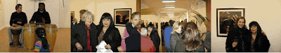
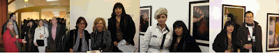

Exposición del 16-01-2009 al 16-02-2009
viernes, 16 de enero de 2009

La Galería O+O tiene el placer de presentar la exposición colectiva formada por las obras de los artistas Mao Di, Zhang Yang Zheng, Guo Pen, Jorkareli, Paulo Themudo y Rafael Nadales. Una exposición que cuenta con pintura, escultura y fotografía de artistas nacidos en China, Portugal y España, donde una vez más la Galería O+O muestra una pequeña parte de la práctica artística desarrollada en oriente y occidente. La exhibición podrá ser visitada hasta el 16 de febrero de 2009.
La exposición cuenta con un total de 14 fotografías realizadas por tres artistas chinos: Mao Di, Zhang Yang Zheng y Guo Pen. Identificados por Yunnan la provincia donde viven y trabajan, son misioneros contemporáneos de la identidad china. Sus obras utilizan un lenguaje contemporáneo en busca de revitalizar en la sociedad actual china la conciencia del pasado y la tradición. La obra pictórica está representada, mostrando técnicas opuestas, por el trabajo figurativo de Jorkareli y la pintura abstracta de Paulo Themudo. Por último, la escultura toma protagonismo con las piezas llenas de libertad y movimiento del artista gallego Rafael Nadales.
{kind=link}

{kind=link}

MAO DI
Mao Di nacido en 1981 en la provincia de Yunnan (China) presenta en esta exposición seis fotografías de maderas pintadas, que son producto de un día de campo que un grupo de artistas de Yunnan organiza cada año para captar e interpretar los cambios que provoca el desarrollismo chino. Son fotos tomadas, a modo de "close up", de detalles de un viejo puente de madera desvencijado encontrado en el camino. Dan fe simbólica de un abandono despreciativo del pasado en el que el artista interviene con sus colores en un intento de incorporarlo a la modernidad antes de que se pierda para siempre. De este modo, vemos como en las instantáneas existe una mezcla de pasado y presente, de tradición y modernidad; en busca de una convivencia común entre las formas contemporáneas y la conciencia del pasado. Un trabajo lleno de libertad que utiliza técnicas y formas contemporáneas para revitalizar la conciencia del pasado chino, una forma de enfocar la antigüedad desde el lenguaje de la modernidad.
ZHANG YONG ZHENG
En las fotografías del artista chino Zhang Yong Zheng (1978) vemos como las difusas imágenes vienen cruzadas por lo que aparentan ser unas líneas paralelas, que apreciadas de cerca, se asemejan a una forma de escritura. La idea del artista es ofrecer una nueva forma de lenguaje, un lenguaje que hay que inventar y que el artista inventa como puente necesario para cerrar la brecha del entendimiento actualmente imposible entre los lenguajes del pasado y los lenguajes del presente. Las seis obras bajo el lema "Suspiros" son el fruto de un trabajo profundo y misterioso, donde todo es armonía gracias al rítmico movimiento de las líneas caligráficas. Crea una atmósfera espiritual de rostros difuminados entre la oscuridad que callan, escuchan, tocan y suplican.
GUO PENG
Guo Peng en sus dos obras muestra los dos rascacielos de Shanghai. Una interpretación Pop Art de estos edificios que simbolizan la obsesión actual que existe en China por ofrecer una imagen brillantísima y modernísima, algo totalmente contrapuesto a la supuesta autenticidad de los valores del pasado que defiende este país; que tiene gran parte de mera fachada: en la propia Shanghai se despilfarran neones por la noche mientras en verano las industrias aún sufren cortes de suministro eléctrico. Imágenes de construcciones que brillan en la oscuridad de la noche como un grito de atención para que el concepto de modernidad no acabe con los valores y las tradiciones del pasado. El trabajo artístico de Guo Peng (1982 Dazhou, China) se basa principalmente en la fotografía, aunque ha experimentado con otras técnicas como la pintura, el video, la instalación o performances. Su obra llega a España por primera vez después de ser expuesta en países como China, Japón, Taiwán, Estados Unidos y Suecia.
JORKARELI
Pintor formado en Madrid y Washington (EE.UU), cuenta con numerosas exposiciones de ámbito nacional e internacional y varios premios. Su actividad creadora, además de la pintura, abarca el diseño, la decoración y elaboración y dirección de espectáculos. Es fundador de la galería-estudio "La Colmena", miembro cofundador del grupo de teatro "Aquelarre" y director y locutor de programas radiofónicos culturales. Su obra pictórica está compuesta por un realismo diluido por la espontaneidad y la frescura. La pincelada de Jorkareli se quiebra, rompe y difumina creando un bello dibujo impreciso lleno de movimiento y viveza. Obras desdibujadas que dejan a la vista el blanco del lienzo y la técnica pictórica del artista. Dos colores son los principales en este juego figurativo el negro y el rojo sangre, que tiñe la capa de los toreros y el traje de las bailaoras.
PAULO THEMUDO
La obra del artista portugués Paulo Themudo se distancia del arte figurativo, desarrollando un trabajo caracterizado por técnicas como el splashing o el dripping, consistentes en lanzar pintura al lienzo o dejarla gotear encima de este. El dripping, cuyo mayor exponente es Jackson Pollock, consiste en dejar gotear o chorrear la pintura, a través de un recipiente (tubo, lata o caja) que el pintor sostiene. De manera que la pintura cobra un carácter gestual, ya que la obra no se realiza con la mano, sino con un gesto de todo el cuerpo. Dentro de esta concepción pictórica que se engloba en la Actión Painting, el trabajo de Paulo Themudo expresa mediante el color y la materia sensaciones tales como el movimiento, la velocidad y la energía. Las telas se llenan por completo de magníficos colores en forma de manchas e hilos que se mezclan y entrecruzan. Chorretones y goteos de diferentes grosores y tonos crean una atrayente y peculiar superficie en el cuadro. El resultado es una pintura abstracta de carácter gestual donde el color tiene una importancia fundamental. Un trabajo pictórico que tiene cierto paralelismo con la "escritura automática" surrealista.
RAFAEL NADALES
Rafael Nadales (A Coruña, 1950) es un artista gallego con numerosos premios europeos y mundiales como escultor, su obra ha sido expuesta en numerosos lugares como Barcelona, París, Nueva York, Shanghai, California, y se encuentra en colecciones como Caixa Galicia, Ayuntamiento de España (Galicia), Strullendorof (Alemania) y Fundación Araguaney (Santiago de Compostela). Las dos disciplinas artísticas en las que Nadales ha centrado su carrera han sido la escultura y la pintura, creando obras dinámicas, abiertas y comunicativas. Trabaja multitud de materiales, esculpe y modela la piedra, el bronce, la madera, el metal, la pizarra; y pinta al óleo o con tinta. En ocasiones realiza obras en las que mezcla las dos disciplinas concibiendo soberbios relieves y técnicas mixtas.